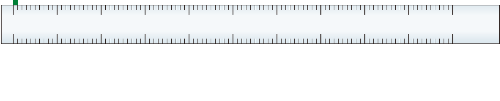
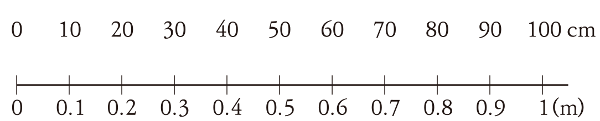

3. 소수의 덧셈과 뺄셈
소수 두 자리 수를 알아볼까요
전개
수학
52
쪽
수학 익힘
40
쪽
1 cm는 몇 m인지 알아봅시다.
 
1 cm는 1 m를 똑같이
(으)로 나눈 것 중의 1입니다.
1 cm는 몇 m인지 분수로 나타내 보세요.
/
m
수수깡 1개를 똑같이 6조각으로 나누었습니다. 샛별이는 그중 2조각을 사용했고, 우주는 그중 3조각을 사용했습니다. 두 사람이 사용한 수수깡은 전체의 얼마일까요?